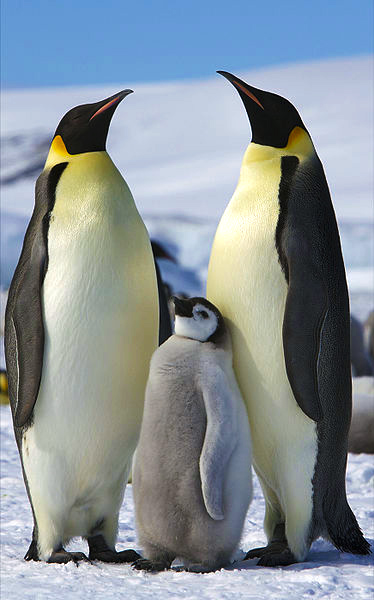

Tučniak obrovský
Je nejvyšší a nejtěžší ze všech tučňáků. Je endemitem Antarktidy. Samec má stejné zbarvení peří jako samice, bývá však o něco vyšší a těžší. Obecně druh dosahuje výšky až 122 centimetrů a váhy mezi 22–45 kilogramy. Hřbet a hlavu má černou, břicho bílé a okolí uší žluto-oranžové. Jako všichni ostatní tučňáci je nelétavý a jeho křídla jsou tuhá a zploštěná v ploutve.
"Toto je môj najoblúbenejší tučniak!" Autor webu
Habitat
Hnízdí na ledových pláních často daleko od moře, kde je led nehybný a jsou tak v bezpečí před jarním táním. Kvůli složitému rozmnožování stráví na pevnině podstatnou část svého života.
Potrava
Až z 90%se tučňáci živí výhradně krilem. Dále se živí rybami a případně hlavonožci, nacházející se v antarktických vodách. Nejčastěji ryby jako treska antarktická (Pleuragramma antarcticum), dále ryby převážně z čeledi ledovkovitých (Nototheniidae), krakatice glaciální (Psychroteuthis glacialis), krakatice Kondakova (Kondakovia longimana) či krunýřovka krilová (Euphausia superba).
Objevení
Roku 1844 jej vědecky zařadil zoolog George Robert Gray, který se však s tímto tučňákem vůbec nesetkal. Na tom se podílel přírodovědec Johann Reinhold Forster, který při prvním popsání podobného druhu (17. 1. 1775 tučňáka patagonského) usoudil, že se jedná o tentýž druh. Po důkladnější analýze oba druhy G. R. Gray vědecky oddělil a z úcty k J. R. Forsterovi nese latinské jméno Aptenodytes forsteri.
